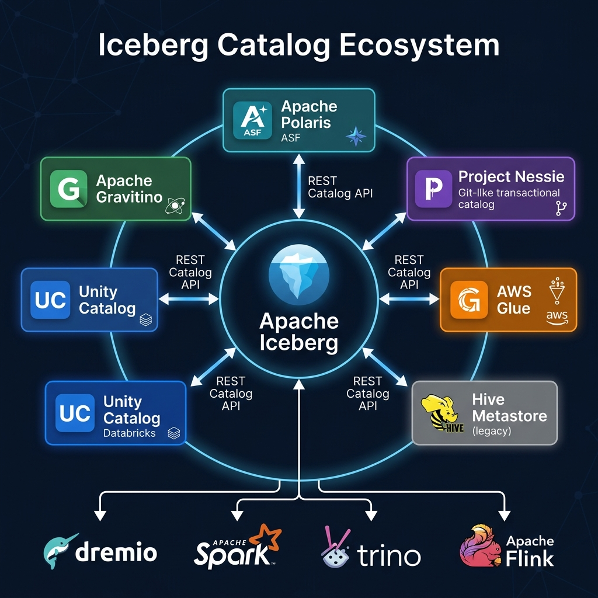
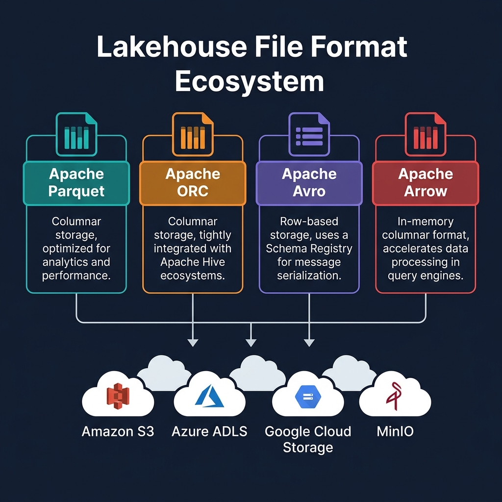

What Is MinIO?
MinIO is an open-source, high-performance object storage server that implements the Amazon S3 API. It can be deployed on any infrastructure — bare metal servers, Kubernetes clusters, on-premises data centers, or edge computing environments — and provides cloud-native object storage semantics without dependency on a cloud provider.
MinIO's S3 API compatibility is its most important property for the lakehouse ecosystem: every tool built for Amazon S3 — Apache Iceberg, Apache Spark, Apache Flink, Dremio, Trino — works with MinIO without any code changes. The engine is simply configured with a MinIO endpoint URL instead of an S3 endpoint URL.
MinIO for Local Lakehouse Development
MinIO is the standard storage backend for local Apache Iceberg development environments. A complete local lakehouse development stack using Docker Compose typically includes:
- MinIO: Object storage, running on localhost:9000, S3-compatible
- Project Nessie or Apache Polaris: Iceberg REST catalog
- Apache Spark: ETL and table management
- Dremio or Trino: SQL analytics
With this stack, a developer can create Iceberg tables in MinIO, write data with Spark, and query with Dremio — testing the complete lakehouse stack on a laptop without any cloud account or internet connectivity required. This local development pattern dramatically reduces the feedback loop for lakehouse feature development.

MinIO for On-Premises Lakehouses
For organizations with on-premises data that cannot move to the cloud (due to regulatory requirements, latency sensitivity, or data sovereignty constraints), MinIO enables a true on-premises lakehouse with cloud-native architecture:
- MinIO deployed on bare metal or Kubernetes provides S3-compatible storage on-premises
- Apache Iceberg tables stored in MinIO use the same format as cloud-based tables
- Dremio (self-hosted), Spark, and Trino connect to the on-premises MinIO as they would to S3
- The same Iceberg tooling, query patterns, and governance approaches work identically
This means the knowledge and tooling developed for cloud-based Iceberg lakehouses applies directly to MinIO-based on-premises deployments — reducing the skill gap between cloud and on-premises environments.

Summary
MinIO is the bridge that extends the open data lakehouse architecture beyond the cloud to on-premises, edge, and local development environments. Its S3 API compatibility means the entire lakehouse ecosystem — Apache Iceberg, Dremio, Spark, Trino, Flink — works with MinIO identically to how it works with Amazon S3. For development teams, MinIO provides a frictionless local lakehouse environment; for enterprises with on-premises constraints, MinIO provides a cloud-native storage architecture without cloud dependency.